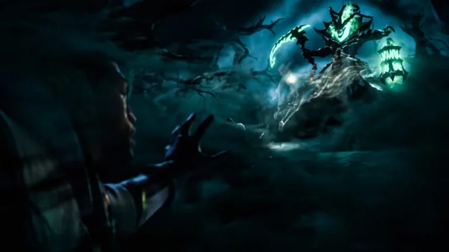

SOBRE MIM !

um Sentinela da Luz, é um caçador de aparições e espectros que usa suas pistolas relicárias para persegui-los implacavelmente e, por fim, aniquilá-los. Após a captura de minha esposa pelas mãos do espectro Thresh, embarquei em uma jornada de vingança. Mas, mesmo com a volta de minha amada ao reino dos vivos, minha ira permanece inalterada. Impiedoso e obstinado, não hesitarei em proteger os vivos contra os horrores da Névoa Negra.